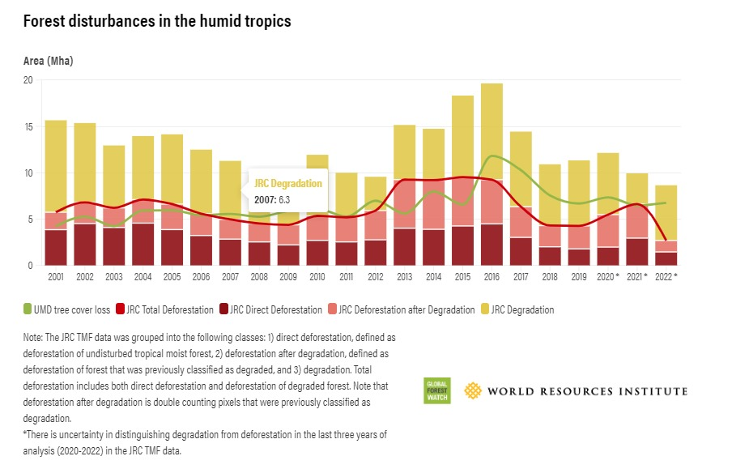
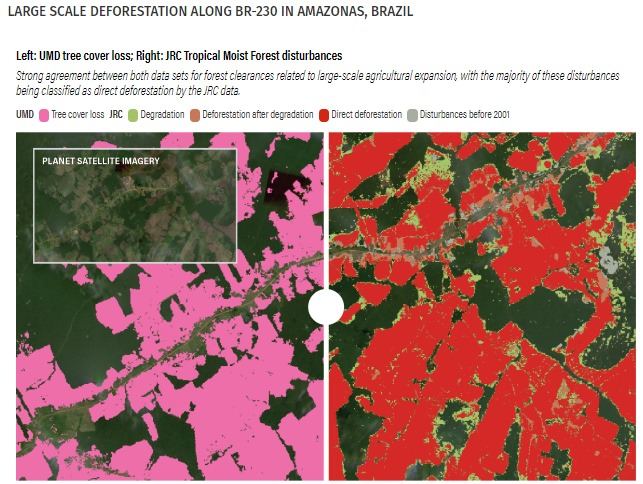

Michelle Sims, January 8 2024
The wide availability of forest and land cover maps based on satellite data provides more information on the world’s forests than ever before. However, this plethora of information can also be challenging for people trying to understand differences in data sources and decide which data to use for a specific purpose.
In the past, we have compared the annual tree cover loss data from the University of Maryland and available on Global Forest Watch (GFW) with national data from Brazil and Indonesia, as well as with data from the United Nations Food and Agriculture Organization’s (FAO) Global Forest Resources Assessment, to shed light on some of these differences.
Another data set that tracks forest change in the tropics is the Tropical Moist Forest data set from the European Commission Joint Research Centre (JRC). Like the UMD tree cover loss data, the JRC TMF data is based on Landsat satellite imagery and is updated annually. Yet while both data sets map forest disturbances, the maps and numbers look a little different.
In this blog, we explain some key differences in the definitions and methods used for each data set that impact the resulting maps and discuss how the disturbances mapped by both data sets compare (while the data sets also map forest gain or regrowth, this blog focuses on comparing their mapping of forest disturbances). While understanding these differences can help determine the contexts for which each data set might be useful, note that this analysis does not evaluate the quality or accuracy of either data set.
The UMD data set maps forests globally based on tree cover extent in 2000. Tree cover is defined as woody vegetation with a minimum height of at least five meters at 30-meter resolution, which includes all types of tree cover — including natural or managed forest and plantations — and is not limited to a specific forest type. The GFW map shows tree cover with a 30% canopy density, which we use in our analyses and in this comparison, although users can adjust the threshold based on their needs.
The JRC data set, on the other hand, maps forests beginning in 1990. The data includes all closed primary and secondary forests in the humid tropics and does not apply a minimum height or canopy density threshold to delineate forest extent.
As a result of these definitional differences, some areas included in the 2000 UMD tree cover extent in the tropics like dry forests, young secondary forests and plantations are not classified as forests in the JRC data set in 2000 — a total of 655 million hectares (Mha), or 34%, of the UMD tree cover extent area that overlaps with the JRC data. Likewise, the JRC forest extent in 2000 includes some areas that do not meet the height and 30% canopy density threshold in the UMD data or are otherwise not mapped as tree cover by the UMD data — 17.2 Mha, or 1% of the JRC forest extent.
Because of the differences in geographic coverage and scope between the two data sets, this blog only compares forest disturbances from 2001-2022 for areas that, in the year 2000, are mapped both as tree cover by UMD and as forest by JRC.
The JRC Tropical Moist Forest data set maps degradation and deforestation in the humid tropics
The JRC TMF data set maps disturbances to tropical moist forests — including degradation and deforestation — from 1990 to 2022. The JRC team maps these changes using an algorithm that detects forest disruptions, meaning an absence of tree foliage cover within a 30-meter pixel for each available Landsat image, and then classifies the status of forest based on how long these disruptions are visible.
The TMF data set defines degradation as temporary disturbances occurring for up to 2.5 years, while it defines deforestation as longer-term disturbances where disruptions to tree cover are visible for more than 2.5 years and no tree regrowth is detected over the last three years. In any given year, a forest is considered disturbed if there is a disruption detected in at least one Landsat image during that year.
Thus, pixels classified as degraded are still considered forest, with existing or regrowing trees, while pixels classified as deforested are undergoing a longer-term loss of forest. Because disruptions are recorded and analyzed for the entire time series, the data set classifies dynamics over time; for example, a forest pixel may be classified as degraded in one year after a short-term disturbance, then after a period of recovery may later be classified as deforested after ongoing disturbances with no tree regrowth. The JRC deforestation class therefore includes direct deforestation (deforestation of undisturbed forest) or deforestation after degradation (deforestation of forest that was previously classified as degraded).
The data set also analyzes the frequency, duration of disruptions and time of forest recovery in between disruption events to identify deforestation following degradation versus multiple degradation events.
The UMD tree cover loss data set on GFW maps all types of tree cover loss globally
The UMD tree cover loss data set maps annual tree cover loss from 2001 to 2022. The UMD team uses an algorithm that detects loss using change detection metrics based on comparison of Landsat images between the present and past years. Tree cover loss, defined as a clearing of tree cover of at least a half of a 30-meter Landsat pixel, includes both temporary and permanent losses without defining or differentiating which loss is considered degradation or deforestation. Once classified as loss, pixels are masked from further updates, meaning that any following forest change dynamics — such as regrowth or subsequent disturbances — are not recorded.
The UMD tree cover loss data can be combined with contextual data layers, such as UMD’s map of humid tropical primary forest, to see loss within specific forest types.
Overall, the JRC data detects a larger area of disturbances across the tropics from 2001-2022 compared with the UMD data. The JRC data detects 258 Mha of disturbances, including 113 Mha of degradation and 145 Mha of deforestation, while the UMD data detects 143 Mha of tree cover loss. However, trends in total deforestation mapped by JRC and tree cover loss mapped by UMD are generally aligned: They are largely similar for the first decade; then from 2013-2015, JRC detects a larger area as deforestation than UMD detects as loss, and after 2016, UMD detects a larger area.
We further separated out the disturbance types mapped by the JRC data and overlaid the data sets to evaluate how the two data sets compare at each pixel. Among all the JRC data’s disturbance classes, the JRC direct deforestation class aligned most closely with UMD tree cover loss. Across the tropics from 2001-2022, 46.8 Mha, or 68%, of the area classified as direct deforestation by the JRC data was also classified as tree cover loss in the UMD data. This varied by region and was highest in Asia/Oceania and the Americas (66% and 75% respectively) and lowest in Africa (50%). The UMD data less often classified areas that JRC identified as deforestation after degradation as tree cover loss (38.1 Mha, or 50% across the tropics).
In some areas, disturbances classified as degradation by the JRC TMF data set were classified as tree cover loss by the UMD data. Across the tropics from 2001-2022, 32.6 Mha, or 29%, of the area the JRC data classified as degradation was also classified as tree cover loss in the UMD data. The JRC degradation class includes three types of degradation: short-duration (less than one year), long-duration (1-2.5 years) and short-duration over 2-3 periods (short-duration degradation that occurs two to three separate times throughout the time period). The JRC data also measures “intensity” of degradation based on the total number of Landsat images where disruptions in tree cover were visible. We found that, in general, the UMD data:
In other areas across the tropics, the UMD data detected tree cover loss for 6.4 Mha, or 7%, of areas where there the JRC data detected no disturbance events.
The two data sets align more closely for more abrupt disturbances that are likely to meet the definitions used in both data sets, such as intense fires (which the JRC data may classify as long-duration degradation) or clearance of tree cover for agricultural expansion (usually classified as deforestation in the JRC data). The two data sets are less likely to detect the same disturbance when it is followed by a rapid recovery (such as short-duration degradation in the JRC data, including disturbances like drought, selective logging or low-intensity fires, which may only be detected in as few as one Landsat image) or disturbances resulting in gradual reduction of tree cover over a longer time period (such as degradation followed by deforestation in the JRC data). In these cases, the disturbance may not meet the UMD definition of tree cover loss and therefore is less likely to be detected in the UMD data. Both data sets have different strengths. The UMD data is global in scope, allowing for comparative analysis across regions due to global consistency in definitions and methods. Within the tropics, the UMD data includes broader coverage of forest types beyond tropical moist forests, including tropical dry forests. The UMD data also provides flexibility for users to adjust the canopy density threshold according to their preference or needs, which can be used to align with a specific forest definition or forest characteristics of a specific biome.
Meanwhile, the JRC data detects degradation and less intense disturbances, which can be helpful for users who want to understand where forests have experienced various types of stresses that have not resulted in complete loss. The JRC data also monitors forests after initial disturbances to track forest recovery and subsequent disturbances, which is helpful for users who would like to understand yearly change dynamics and identify where there are repeated disturbances.
However, it is important to note that we are not evaluating the accuracy of either data set. Assessing which data set is more accurate for a specific use case or geography would require a formal validation exercise.
Ultimately, these two data sets present complementary information that can help us better understand the various types of changes occurring in tropical forests.